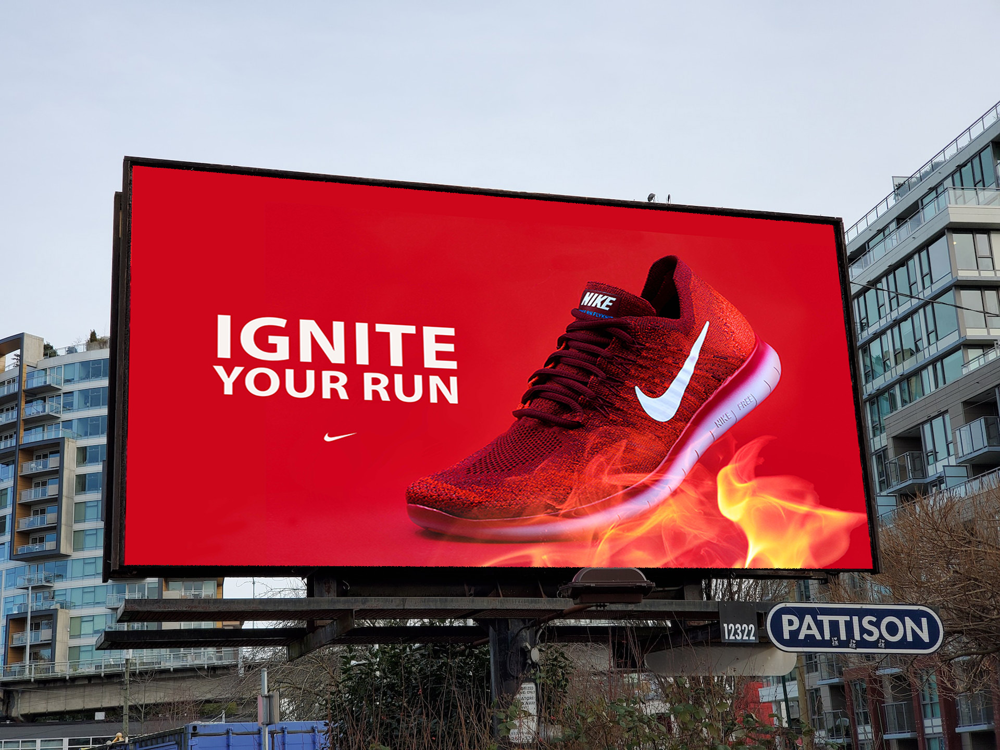

Ignite Your Run – Ad Design
This ad was created to capture the energy and excitement of running. Using Photoshop, I combined custom imagery—including a sneaker and flame effects— to create a bold, high-impact visual.

Design Process
To bring this concept to life, I layered and blended multiple assets in Photoshop. Below are some of the key elements used in creating the final piece.
Skills Used
- Learned to integrate photography and digital effects for advertising
- Enhanced skills in Photoshop composition and creative typography
- Understanding of conceptual storytelling in visual marketing